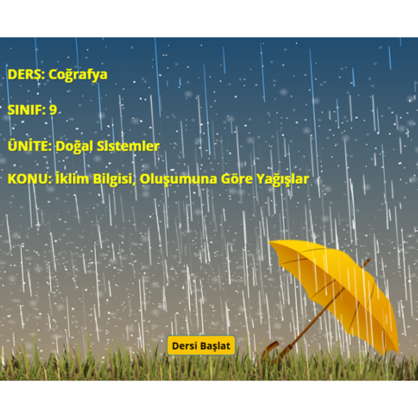
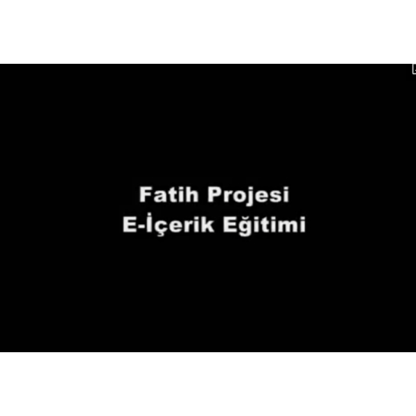
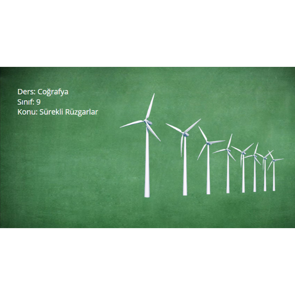
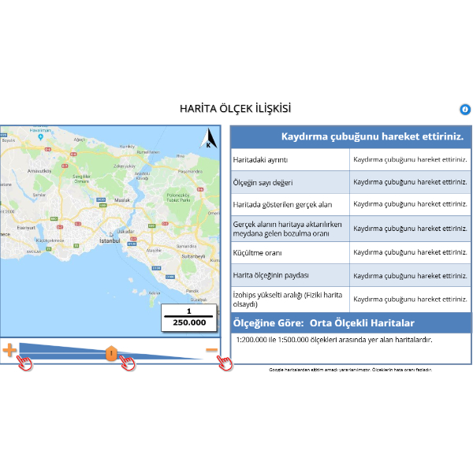
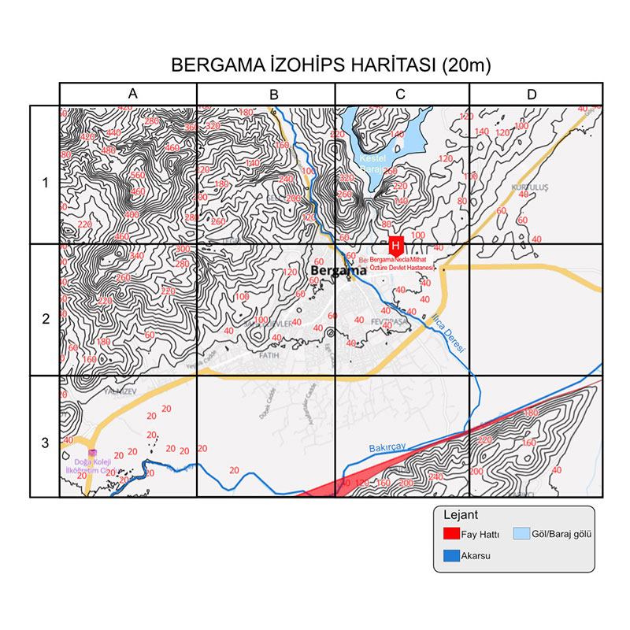

Teknoloji Odaklı Öğrenme Senaryoları (TOÖS)
Eğitim teknolojilerindeki birikimimi, coğrafya biliminin karmaşık konularını basitleştiren interaktif modüllere dönüştürüyorum. Bu sayfada yer alan içerikler, sadece bilgi aktarmayı değil, öğrencinin sürece aktif katılımını sağlamayı hedefleyen 2024 Teknoloji Odaklı Öğrenme Senaryoları (TOÖS) vizyonu doğrultusunda tasarlanmıştır.
Tüm LMS sistemlerinde ve modern tarayıcılarda sorunsuz çalışma.
Profesyonel seslendirme, animasyon ve etkileşimli bileşenler.
Üretilen her içerik, Türkiye Yüzyılı Maarif Modeli'nin hedeflediği erdemli ve yetkin birey profilini destekleyen şu stratejileri esas alır:
Coğrafya dersleri için geliştirdiğim interaktif senaryolar




